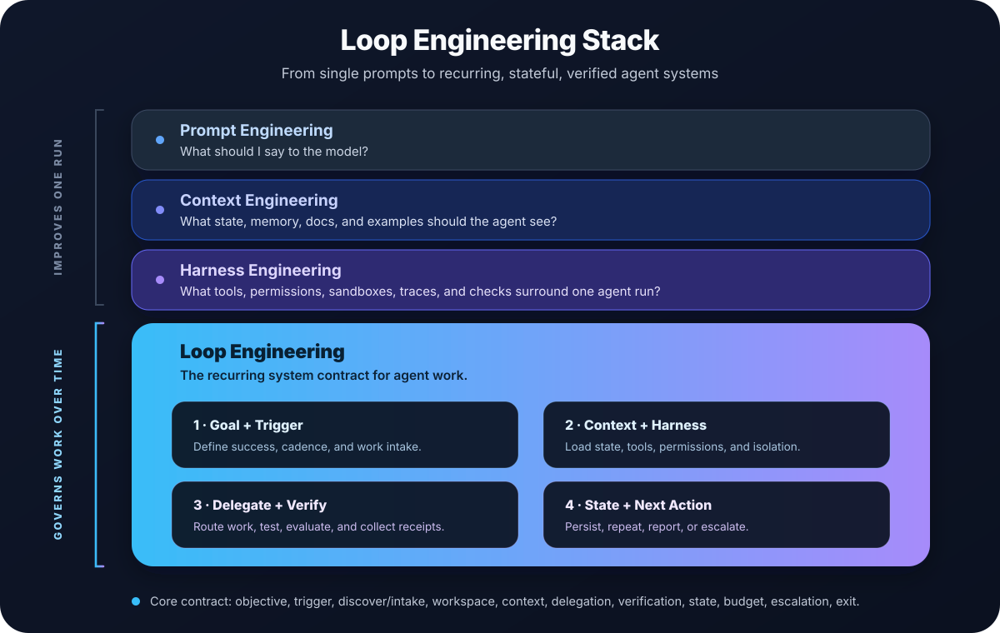

Awesome Loop EngineeringDesign loops,
not just prompts.
Stop prompting agents turn by turn. Build the recurring system around them — one that discovers work, hands it to agents, verifies the result, and decides what happens next.

Four layers, one recurring system
Prompt, context, and harness engineering make a single agent run better. Loop Engineering sits on top and governs agent work over time.
One pass of a recurring loop
Verification is a deterministic gate, not the agent's opinion. State persists outside the model. Every loop has a budget and a human exit.

Start from the problem you have
Each card opens a ready-to-adapt pattern with a trigger, verification gate, durable state, budget, and escalation path. Compare them all in the pattern matrix.
No pattern matches that keyword. Browse the full matrix.
Every loop names the same parts
A useful loop has a contract. If a part is missing, it becomes either a manual prompt habit or an unsafe background automation. The contract ships as a JSON schema with 15 validated example contracts.

Verifiable by design
Tests, typechecks, evals, traces, or reviewers decide done — never the acting agent alone.
State outside the model
Progress files, issues, checkpoints, and traces survive the next run and every context reset.
Budgeted and bounded
Retries, runtime, and concurrency are capped, with a clear human exit before anything risky ships.
Pick a runtime deliberately
The same contract can run as a session command, a scheduled cloud job, a CI workflow, or a cron wrapper. The runtime selection guide compares persistence, file access, isolation, and permissions.
Claude Code /loop
Session-scoped recurring task while you are nearby.
Desktop scheduled task
Local recurring runs with file access and missed-run guardrails.
Codex automation
Unattended background task in an isolated worktree.
GitHub agentic workflow
Scheduled or event-triggered loop in GitHub Actions.
Shell / cron
Minimal wrapper that delegates to an agent CLI and records receipts.
Runnable reference
A dependency-light test-repair loop you can run today.
Climb one level at a time
A reliable Level 3 loop with clear state and deterministic checks is usually more valuable than a flashy Level 5 loop with vague goals.
Browse by category
Primary sources, official docs, papers, benchmarks, and implementation-heavy write-ups on AI agent loops and coding-agent automation — selective, not a dump. Jump into any section of the README.
Bring a source or a real loop
Add a vetted source with one specific annotation, or document a loop you actually run — both paths have a checklist.
Loop Engineering, answered
Short answers to the questions people ask first.
What is loop engineering?
Loop Engineering is the practice of designing recurring AI agent and coding-agent systems. Instead of prompting an agent turn by turn, you build a loop that discovers work, delegates it to agents, verifies the result against tests or other gates, persists state outside the model, decides what happens next, and runs again on a cadence or until a verifiable goal is reached.
How is loop engineering different from prompt, context, and harness engineering?
Prompt engineering improves what you ask, context engineering improves what the model can see, and harness engineering improves the tools, permissions, and checks around a single run. Loop engineering sits above all three: it governs how agent work repeats, verifies, persists state, and escalates over time.
When should you use an agent loop?
Use a loop when work recurs and a deterministic check can decide success, such as keeping a pull request moving, repairing failing CI, monitoring a deploy, or triaging dependency updates. If a task is one-off, or "done" depends only on a human's judgment, a single agent run is usually enough.
What is in a loop contract?
A loop contract names the parts every reliable loop shares: objective, trigger, intake, workspace, context, delegation, a verification gate, durable state, budget, escalation, and an exit condition. The repository ships a JSON schema and validated example contracts for each pattern.
Which runtimes can run agent loops?
The same loop can run as a Claude Code /loop or scheduled task, a Codex automation, a GitHub agentic workflow, a shell or cron wrapper, or a durable-execution runtime. The runtime selection guide compares persistence, file access, isolation, and permissions so you can choose deliberately.